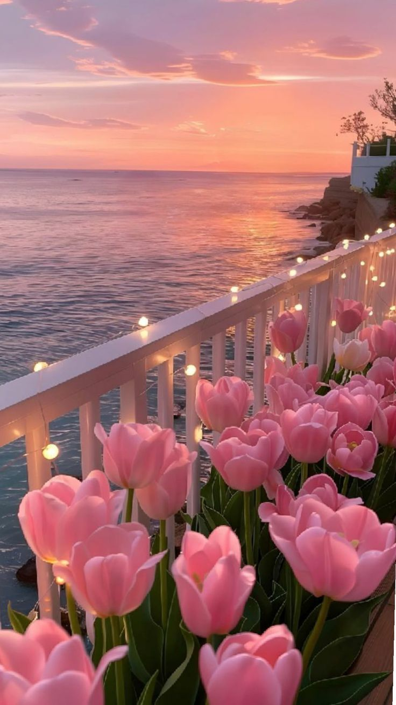
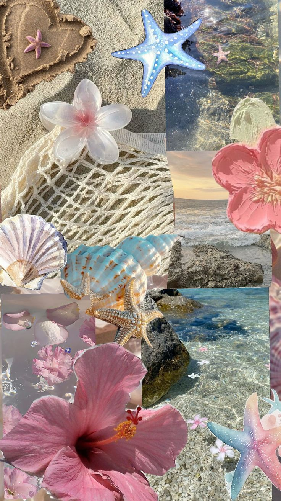

|
♫₊˚.🎧 ✩｡ Mendengarkan musik menjadi bagian dari keseharian banyak orang, termasuk aku. Musik bukan hanya hiburan, tapi juga dapat menenangkan di tengah kesibukan atau rasa penat. Ketika suasana hati sedang tidak menentu, mendengarkan lagu favorit bisa seketika mengubah mood. Genre yang aku sukai cukup beragam mulai dari pop, akustik, hingga instrumental. Saya percaya bahwa setiap lagu punya cerita dan emosi tersendiri yang bisa menyentuh pendengarnya dengan cara yang berbeda. Itulah mengapa aku merasa mendengarkan musik bukan hanya hobi, tapi kebutuhan emosional yang menyegarkan pikiran dan jiwa. |
|  | ⋆｡°•☁️ Memotret pemandangan adalah cara menikmati dan mengabadikan keindahan alam. Melalui kamera, aku bisa menangkap momen-momen indah seperti langit senja, kabut pagi, atau pantulan cahaya di air yang sering terlewatkan begitu saja. Menurut aku, kegiatan ini melatih kesabaran dan kepekaan dalam melihat detail. Memotret bukan hanya soal gambar, tapi juga caraku mengekspresikan perasaan tanpa kata-kata. Karena itu, hobi ini terasa sangat bermakna dan menyenangkan. |
|  | 🪼⋆.ೃ࿔*:･ Angin sepoi-sepoi, deburan ombak, serta aroma laut selalu berhasil membuat pikiranku rileks dan beban terasa lebih ringan. Duduk di pinggir pantai sambil memandang cakrawala atau berjalan menyusuri pasir hangat adalah momen yang aku nikmati sepenuhnya. Bagi aku, pantai bukan hanya tempat berlibur, tapi juga tempat untuk menenangkan diri dan mengisi ulang semangat. |
| Kembali | Selanjutnya |